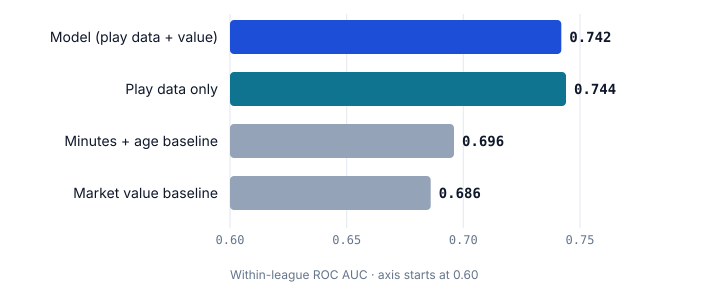
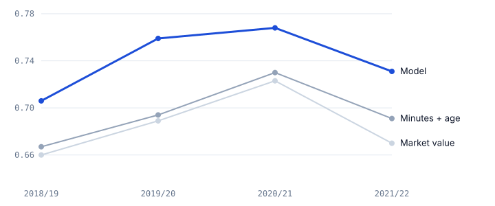
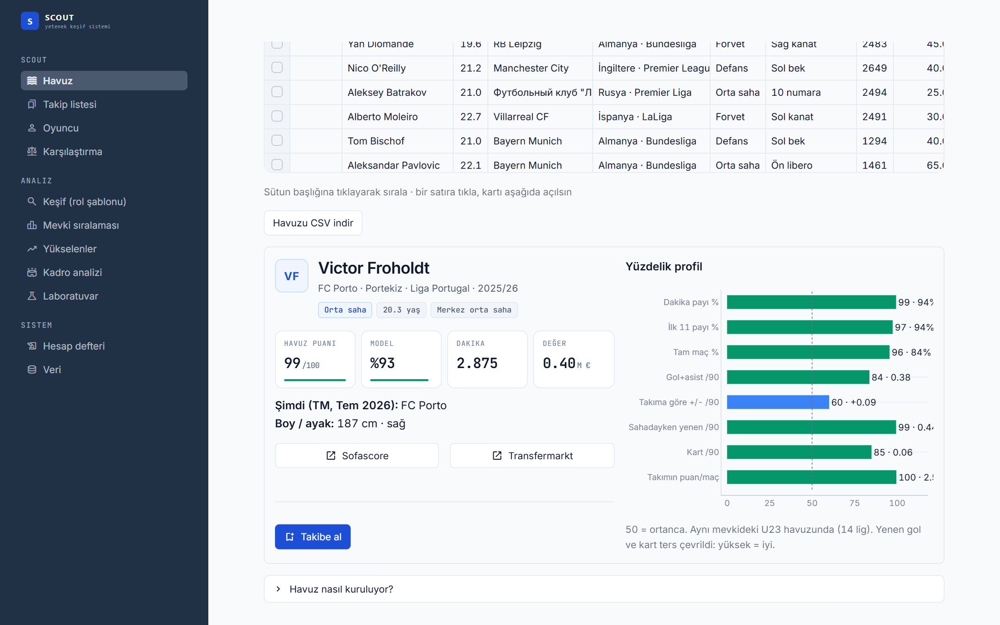
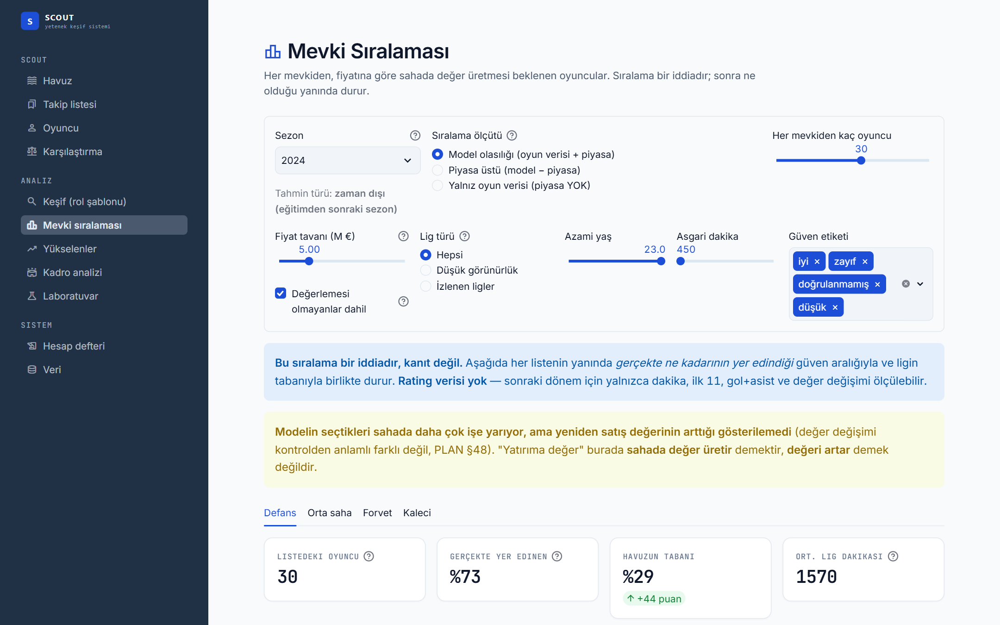
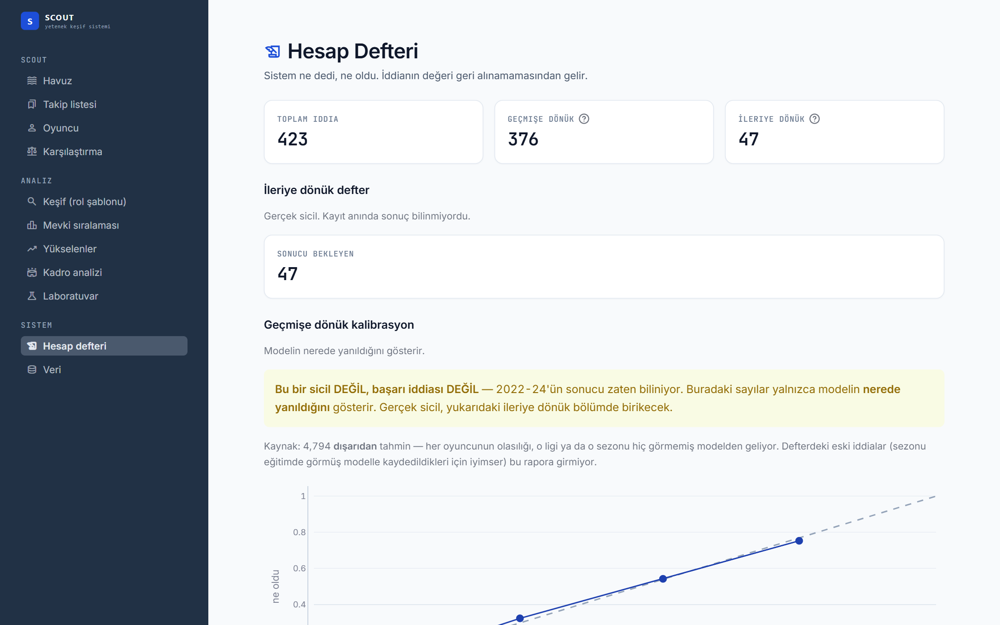

What exactly is being predicted, and what has to be beaten
Scouting reports are full of opinions that are never scored. I wanted a question with a hard, checkable answer:
Given everything known about an under-23 player at the end of a season, will he play at least 900 league minutes in one of 14 tracked top-flight leagues in the next 12 months?
A model is only interesting if it beats what people already use. I compare against two baselines, the same way a forecast should be compared against the market price rather than against a coin flip:
- Minutes + age: the scout's rule of thumb. Young and already playing a lot.
- Market value: the market's own aggregated opinion (Transfermarkt valuations).
Evaluation is within league (ROC AUC computed inside each league-season, then averaged weighted by positives), so the model cannot look good simply by knowing that Premier League players tend to stay in the Premier League. Confidence intervals come from a paired bootstrap clustered by player.
Free data, two sources, one entity-resolution problem
API-Football (free tier)
37,890 player-seasons × 304 features, 24 leagues including second tiers and South America, 2022–2024. Quota-aware, cached and resumable ingestion: every cached response is spent quota, so raw data is treated as immutable.
Transfermarkt open dataset
92,958 player-seasons, 14 European top flights, 2012–2026: appearances, line-ups, valuations, contracts. Ten seasons that had never been used made a genuinely untouched test period possible.
Linking the two sources is the hard part: the same player appears as "T. Abed" in one and under his full name in the other. The matcher assigns confidence grades; of 19,541 links, 13,070 are accepted (high confidence or manually confirmed). The rest sit in a review queue. That design decision matters later.
The whole chain runs unattended every morning from Windows Task Scheduler, in a fixed order, and finishes with the audit, whose result is written to the run log.
A sealed test with pre-registered hypotheses
Model choices were made on 2013–2017 only (leave-one-league-out and rolling-origin validation). Before touching 2018–2021, I committed the hypotheses and their success criteria to git. The test script writes a lock file on first opening and refuses to run a second time, so the test set cannot be tuned against quietly.

| Pre-registered hypothesis | Result (Δ AUC, 95% CI) | Verdict |
|---|---|---|
| H1 · Model beats minutes + age | +0.046 [+0.027, +0.064] | PASS |
| H2 · Model beats market value | +0.057 [+0.042, +0.072] | PASS |
| H3 · Play data alone vs market (no direction claimed) | +0.058 [+0.042, +0.076] | reported |
| H4 · Defensive context (on-pitch goal difference) adds signal for defenders | −0.005 [−0.019, +0.007] | FAIL |
| H5 · In the cheap band, the model's top-20 lists beat minutes + age in most cells | won 5 / 12 cells | FAIL |

Calibration drifts, and chasing it makes things worse
Ranking was stable, but the probability level moved by up to ±6 points from season to season (base rate jumped to 64% in 2019/20). I tested six recalibration rules in a forward chain (raw, all history, last season, last two seasons, intercept-only, exponential weighting), each with a test proving it never sees the target season.
None beat "use all history". Rules that chase the most recent season were the worst: the drift is noise, not a trend, and reacting to it overshoots. What actually shrank the drift was the length of the training history (±0.04 with 1–4 seasons, ±0.005 with 9–11). The product now tells users to trust the rank, not the difference between 62% and 58%.
26% of outcomes were measured on the wrong person's career
While adding profile links to the UI I noticed "T. Abed" (Jong PSV) pointing to a different player entirely. The linking table stored the best candidate for every player, including low-confidence and rejected matches, and several consumers joined on it without checking confidence. Result: 9,723 / 36,881 outcome rows, and the market-value feature on the same rows, came from someone else.
The fix was structural rather than a filter in each consumer: the ID column is now only populated for accepted matches, so every existing and future join is correct by construction. Two audit checks were added to keep it that way.
| Same measurement | Before fix | After fix |
|---|---|---|
| Cross-validated AUC, all leagues | 0.744 | 0.732 |
| Model − minutes+age, all leagues | +0.094 | +0.074 |
| Low-visibility leagues, 2024: model − minutes+age | +0.102 | +0.006 (not significant) |
| Calibrated, conditional ECE (CV) | 0.028 | 0.030 |
Part of the model's apparent strength in low-visibility leagues was fake: value and outcome came from the same wrong person, so they agreed with each other. I publish the lower numbers. The primary model was not re-chosen after looking at 2024, because selecting on the held-out season would have been a second mistake.
Negative results that changed decisions
Defenders
For defenders, event counts (tackles, interceptions) carry little signal. What predicts is how much the coach trusts them: start share, full-match share, previous season, team strength. The system measures trust, not defending.
More event data ≠ better
On the same 1,742 player-seasons, adding API event features to the Transfermarkt model did not help (combined − TM: −0.009 [−0.019, +0.001]). That argued against paying for richer event data for tracked leagues.
Top of the list
In tracked leagues the model's top-20 lists are not reliably better than a simple minutes list (H5 failed). Its value is across the whole ranking, and in low-visibility leagues.
Resale value
The model's picks go on to play more, but a matched-control study could not show that their market value rises faster. The UI says so in plain words.
A ledger the model cannot edit
Back-tests can always be improved after the fact. So every forecast is written to an append-only ledger with a timestamp and the model version, before its outcome exists. 891 forecasts on the 2025/26 under-23 pool are frozen and will be scored after 15 June 2027. Players a user adds to the watchlist are logged too, with a flag recording whether the outcome was already visible at the time of the pick, so hindsight picks can never be counted as skill.
A tool for browsing a pool, not a single "best player"
Streamlit app over the same store, eleven pages. Scores are shown as percentiles within comparable groups, every rank shows what actually happened next, and weak evidence is labelled as weak. The interface is in Turkish because it was built for a Turkish-speaking user.



From a model to a transfer shortlist under real constraints
As a personal project, I applied the system to the transfer needs of the club I support: a second-tier side pushing for promotion (anonymised here; I have no affiliation with the club). Everything was built from public information on its squad, budget and rules. The interesting part was not the model but the constraints around it:
- Budget: a regulator-set spending cap of roughly €5M for the whole season, wages and fees included. Contract expiry dates mattered more than market values.
- Quota rules: at most 8 foreign players, at least 2 of them born in 2003 or later, and a different rule set after promotion. Each candidate was tagged by which quota slot he would use.
- Two windows: a cheap mid-season fix now, a free-transfer core next summer.
- Data staleness: the open dataset ends in July. Every candidate's club and contract were re-verified against current sources: 19 of 47 were dropped (already sold, loaned, or priced far above budget).
The remaining 28 candidates each received a generated report: contract and quota status, last-ten-match table, availability adjusted for mid-season loans, percentile profile, automatic risk flags (card rate, missed squads, stale valuations), and a blank observation form. The technical and mental grades are left for a human who has actually watched the player. The data is not allowed to pretend otherwise.
Stack and practices
- Every analysis decision, measurement and rejected idea is recorded in a design log (64 sections), including the ones that did not work.
- Held-out data is counted: the log records how many times each test season has been looked at, and declares it exhausted for model selection when it is.
- One source of truth for predictions; the UI never recomputes a probability.
- 353 tests, 41 audit checks, idempotent daily rebuild from immutable raw data.